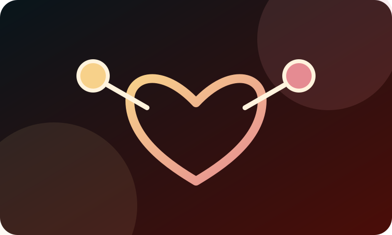

01
Podelite sajt
Pošaljite adresu sajta porodici, prijateljima, komšijama ili osobi za koju znate da se suočava sa izvršenjem.
Podrška koja stiže do pravih ljudi
Ako vam je naš sajt bio koristan ili verujete da može pomoći drugima, podržite projekat tako što ćete ga podeliti sa osobom kojoj je potrebna jasna početna orijentacija.

Podrška projektu
Deljenje, preporuka i dobra informacija mogu biti prvi korak za osobu koja ne zna odakle da počne.
Zašto je podrška važna
Ljudi se često prvi put susretnu sa rešenjem, blokadom računa, obustavom na plati ili penziji i ne znaju odakle da počnu. Ne mora svako odmah znati pravni naziv problema. Važno je da zna gde može da pročita osnovne informacije i kako da napravi prvi bezbedan korak.
Vaša podrška pomaže da ovaj sajt pronađu ljudi kojima je potreban razumljiv jezik, realna očekivanja i upućivanje na dalju stručnu pomoć kada je ona potrebna.
01
Pošaljite adresu sajta porodici, prijateljima, komšijama ili osobi za koju znate da se suočava sa izvršenjem.
02
Jedna poruka može pomoći nekome da proveri datum prijema, rokove i dokumenta pre nego što problem postane još teži.
Proverite svoj slučaj03
Projekat je moguće podržati i novčano, kako bi osnovne informacije i početna podrška bili dostupniji ljudima koji su u najtežoj situaciji.
Podrška projektu
Možete pomoći deljenjem sajta, preporukom drugoj osobi ili novčanom podrškom namenjenom širenju informacija i pomoći najugroženijim građanima. Način i namena novčane podrške biće jasno objavljeni na posebnoj stranici projekta.
Hvala što pomažete da prava informacija dođe do osobe kojoj je potrebna.
Važno: sadržaj sajta je informativan i ne predstavlja garanciju ishoda. Konkretan slučaj zahteva proveru dokumenata, rokova i okolnosti.